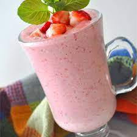

Strawberry Oatmeal Smoothie

Description
A recipe for a strawberry oatmeal smoothie
Ingredients
- 1 cup soy milk
- ½ cup rolled oats
- 1 banana, broken into chunks
- 14 frozen strawberries
- ½ teaspoon vanilla extract
- 1 ½ teaspoons white sugar
Steps
- In a blender, combine soy milk, oats, banana and strawberries. Add vanilla and sugar if desired. Blend until smooth.
- Pour into glasses and serve.